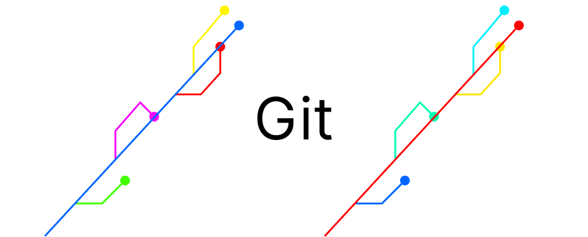

What is Git?
Git is a distributed version control system used to track changes in source code.
Read More

Why Do Developers Use Git?
Most programmers use Git for several key reasons:Version Control,Git allows developers to track changes in their code over time
Read More
What is a branch in Git?
branches are a part of your everyday development process. Git branches are effectively a pointer to a snapshot of your changes.
Read More